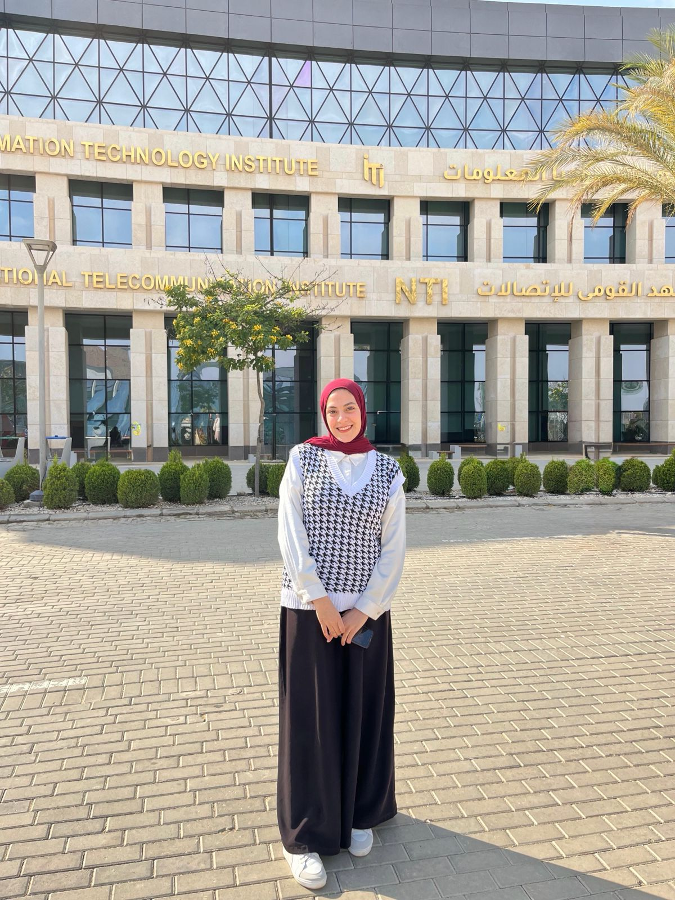

Data Science & AI specialist focused on transforming raw data into clean insights and practical machine learning solutions.

I am a driven Data Scientist & AI Engineer dedicated to transforming raw data into strategic business solutions. Rather than just writing code, I focus on understanding the core problem and delivering scalable, intelligent systems that drive real impact.
My unique value lies in combining deep analytical thinking with practical software engineering. From orchestrating messy data pipelines to deploying advanced computer vision and predictive models, I build end-to-end solutions that automate workflows and turn uncertainty into actionable insights.
I thrive on continuous growth and innovation. By constantly expanding my technical arsenal and staying ahead of the latest AI trends, I ensure the solutions I provide are not only accurate today but ready for the challenges of tomorrow. Let's turn your data into your strongest asset.
Extracting meaning from complex datasets.
Building predictive and intelligent models.
Real-time detection, tracking & classification.
The tools, languages, and frameworks I use to bring data to life.
Practical applications of data science and machine learning solving real-world problems.
An intelligent system that predicts heart disease risk using a tuned Decision Tree model (~80% accuracy) combined with a rule-based expert system for explainability. Includes a modern Streamlit medical UI.
CodeTHE PROBLEM
Medical professionals need explainable predictions for heart disease risk rather than just black-box ML outputs.
KEY HIGHLIGHTS
Combined ML with rule-based system. Streamlit UI. ~80% accuracy.
A machine learning project for predicting King County house prices using Support Vector Regression with an interactive Streamlit web app.
CodeTHE PROBLEM
Predicting King County house prices required careful feature engineering, outlier handling, and dimensionality reduction.
KEY HIGHLIGHTS
SVR Model. PCA for dimensionality reduction. Streamlit app for real-time predictions from uploaded data.
An advanced real-time computer vision system that combines YOLOv8 with classical OpenCV techniques for intelligent surveillance, object tracking, motion analysis, shape-based processing, and real-time counting.
CodeTHE PROBLEM
Need for automated real-time surveillance and tracking of objects in traffic scenes.
KEY HIGHLIGHTS
YOLOv8 + classical OpenCV integration. Object tracking, motion analysis, and real-time counting logic.
An interactive GUI-based simulator for fundamental Operating Systems algorithms including CPU scheduling, memory allocation, and page replacement with visual representations.
CodeTHE PROBLEM
Students struggle to visualize how abstract OS algorithms function under the hood.
KEY HIGHLIGHTS
Interactive GUI. Simulates SJF, Round Robin, FCFS, Best Fit, First Fit, LRU, FIFO, Clock with step-by-step execution.
Healthcare Risk Analysis using CCA to explore relationships between lifestyle factors and medical indicators using Python and MATLAB.
CodeTHE PROBLEM
Understanding the multivariable correlations between complex lifestyle factors and corresponding medical outcomes.
KEY HIGHLIGHTS
Implemented in both Python and MATLAB. Found moderate, statistically significant correlations between the two datasets.
An intelligent AI assistant designed for automating customer support interactions and resolving common queries.
CodeTHE PROBLEM
Reducing human workload in customer support by automatically handling basic queries and routing complex ones.
KEY HIGHLIGHTS
Natural language understanding of user intents. Scalable architecture using Python and modern NLP tools.
Helping businesses and teams make sense of their data with reliable analytical solutions.
Transform messy datasets into structured and analysis-ready data.
Discover patterns, trends, correlations, and useful insights.
Create clear visualizations that make complex data easier to understand.
Build practical classification, regression, and clustering models.
Deploy real-time object detection and tracking pipelines using YOLOv8.
Design, optimize, and manage relational databases using SQL and PostgreSQL.
A systematic process for turning raw data into valuable decisions.
Define the business problem, understand the available data, and set measurable success criteria.
Clean, transform, engineer features, and validate data quality before any modeling begins.
Explore the data deeply, then build, tune, and evaluate appropriate machine learning models.
Present clear results, documentation, and practical recommendations that drive real action.